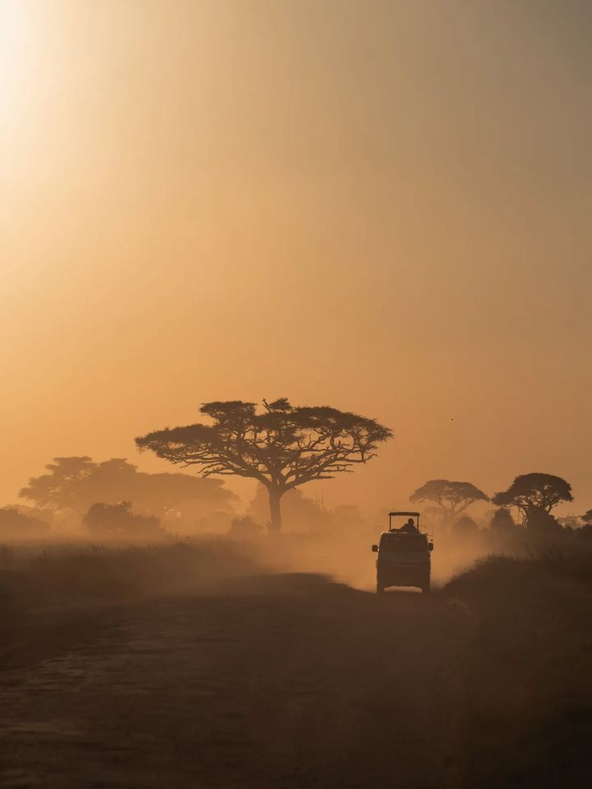

5-Day Kenya 4x4 Migration Safari Itinerary
Experience an exciting journey through Kenya's most spectacular wildlife destinations, from the legendary Maasai Mara to the beautiful landscapes of Nakuru and Naivasha.

Nairobi to Maasai Mara
Depart Nairobi in the morning and travel through the scenic Kenyan countryside towards the world-famous Maasai Mara National Reserve. Arrive in the Mara, check in at your accommodation and enjoy your first exciting game drive in search of Kenya's spectacular wildlife.
- Morning departure from Nairobi
- Scenic journey to Maasai Mara
- Check-in at the accommodation
- Afternoon game drive
- Dinner and overnight stay

Maasai Mara
Spend the day exploring the magnificent Maasai Mara National Reserve. Enjoy exciting game drives across the open savannah while searching for lions, elephants, buffaloes, leopards, cheetahs, giraffes, zebras, wildebeest and other wildlife.
- Early morning game drive
- Breakfast at the camp or hotel
- Full-day wildlife exploration
- Picnic lunch or lunch at the accommodation
- Afternoon game drive
- Dinner and overnight stay

Maasai Mara to Nakuru
After breakfast, depart the Maasai Mara and travel towards Nakuru. Enjoy the changing landscapes as you leave the Mara behind and continue towards the beautiful Great Rift Valley region.
- Breakfast and check-out
- Departure from Maasai Mara
- Scenic journey towards Nakuru
- Lunch along the way
- Arrival and check-in in Nakuru
- Dinner and overnight stay

Nakuru to Naivasha
Enjoy breakfast before continuing your journey from Nakuru to the beautiful Lake Naivasha area. Discover the scenic landscapes of the Great Rift Valley and enjoy time around one of Kenya's most picturesque freshwater lakes.
- Breakfast at the accommodation
- Check-out from Nakuru
- Journey to Naivasha
- Scenic Rift Valley views
- Arrival and check-in
- Dinner and overnight stay

Naivasha to Nairobi
After breakfast, enjoy your final morning in the Naivasha area before departing for Nairobi. Travel through the scenic Great Rift Valley and arrive in Nairobi, where the safari comes to an end.
- Breakfast
- Morning in Naivasha
- Check-out
- Drive to Nairobi
- Drop-off at your hotel or airport
- End of safari